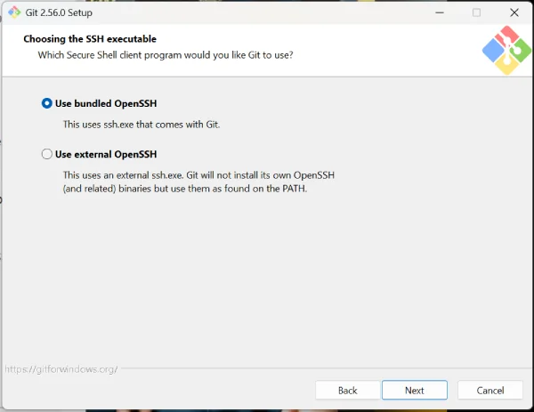

Pantallazo de la instalación de Git

Esta parte de la instalación aparece después de ajustar el PATH y antes de escoger el canal de HTTPS en la que se le indica que use OpenSSL Library. Mantengo la selección por defecto.

Esta parte de la instalación aparece después de ajustar el PATH y antes de escoger el canal de HTTPS en la que se le indica que use OpenSSL Library. Mantengo la selección por defecto.